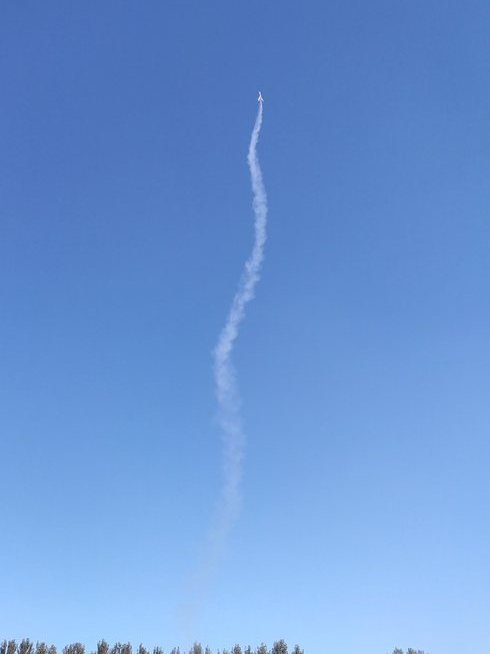
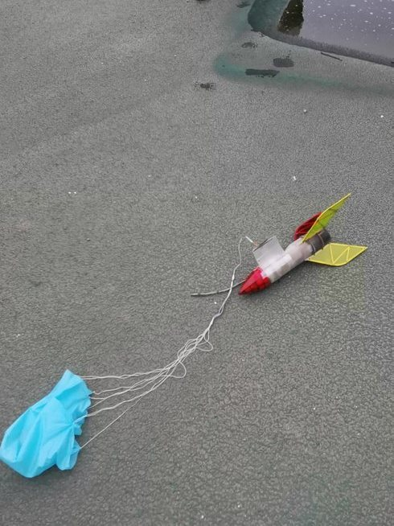
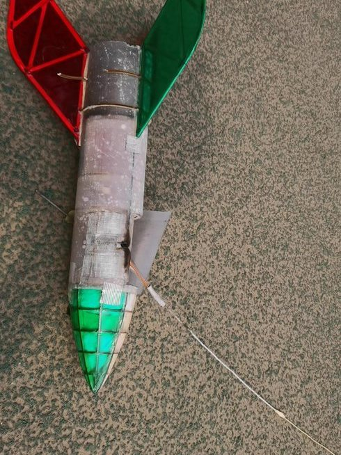

Solid-fuel rocket: hardware design and fabrication
I was mainly responsible for the rocket's hardware: the structural design, the drawings and the fabrication of the whole rocket, from the nose cone, fins and body tube to the recovery system. A teammate handled the software.
- Period
- 2020–2022
- Role
- Mainly responsible for the hardware; led the rocket group in 2022
- Team
- Solid-fuel rocket group, Hebei University of Science and Technology aeromodelling team
- Tools



- test and practice launches
- 50+
- parachute openings after my recovery redesign
- ≈ 9 in 10
- national, CADC 2021 team event
- 4th
- first test flight against a 40 m target, as group leader
- 38 m
What I did
- Worked out the overall layout in OpenRocket, checking the centre of mass and the centre of pressure for stability, then modelled the details in SolidWorks.
- Drew the parts in CAD, exported them as DXF files and cut them on a laser cutter: balsa and plywood ribs, fins and bulkheads.
- Built the airframe from carbon rods, carbon-fibre reinforcement, a fibreglass-and-resin body tube and 3D-printed parts.
- Redesigned the parachute recovery system, which became my main contribution (below).
- As group leader in 2022, redesigned the internal structure for a new target-altitude event.
Recovery system: from side hatch to piston ejection
The old design released the parachute through a side hatch and opened only about one time in two, because the canopy caught on the rocket body. I replaced the hatch with a piston: gas from a small ejection charge pushes the nose cone and the parachute out of the tube together, so the canopy has nothing to snag on. I found the charge size by testing and proved the design with a ground test, and the team adopted it. None of the ten cohorts before us had tried this structure, and the teams after us kept using it.


From drawing to part
Parts were drawn in CAD, exported as DXF and cut on a laser cutter. The two drawings are rendered from the original DXF files; the photos are from November 2020.


As group leader: a target-altitude event
In 2022 I led the rocket group. The event changed to target altitude, scored on how close the rocket's highest point came to 40 m. Before training began, I redesigned the rocket's internal structure and drew and built the new version myself. Its first test flight reached 38 m, and that design set the direction for the group's competition model that year.
Also: Third Prize in the University Aerospace Innovation Challenge 2021 (university round), with a model rocket where I did everything except the software.
Videos


The videos are YouTube Shorts and load from YouTube when you press play.
ROS 2 waypoint patrol with SLAM and Nav2
A TurtleBot3 in Gazebo builds a map of its arena with SLAM, then uses Nav2 to visit three waypoints one goal at a time. The patrol node skips any waypoint that fails or times out and prints a summary at the end. Simulation only.
- Period
- Oct 2026
- Role
- Setup, integration, testing and debugging
- Team
- Individual project; I learned ROS 2 from scratch in about a week
- Tools
What I did
- Set up ROS 2 Jazzy, Gazebo, SLAM Toolbox and Nav2 on WSL2.
- Ran the SLAM mapping, saved the map and ran Nav2 localisation (AMCL) on it.
- Chose the waypoints, wrote the waypoint parameter file, and built and ran the package.
- Designed and ran the tests below, and debugged the problems along the way.
- waypoints reached on a clear route, 128.7 s
- 3/3
- runs that reached every waypoint with an unmapped box on the route
- 3 of 3
- with B blocked: B timed out after 60 s and was skipped
- 2/3
Tests
| Test | Setup | Result |
|---|---|---|
| 1. Clear route | No extra obstacles | 3/3 waypoints reached, 128.7 s |
| 2. Obstacle on route | 0.3 m box on the B → C route, not in the map | 3/3 reached in all 3 runs. The planned B → C path was 1.71 m with the box, against 1.46 m without it |
| 3. Unreachable waypoint | Box placed on top of B, 60 s timeout | A reached, B timed out and was skipped, C reached: 2/3, 105.6 s |
Limits: only a few runs per test, one obstacle size, simulation only (Gazebo ran at about 50–75% of real time on my laptop), no moving obstacles and no real robot.
The main problem I debugged
Nav2 planned a path, but the robot did not move, and the log said "Failed to make progress". From the logs and topic rates, I found that the slow simulator delivered LiDAR scans only about once every 0.6 s, while Nav2's collision monitor, the last safety check before speed commands reach the wheels, treats scans older than 0.2 s as stale and blocks every command.
I raised scan.source_timeout to 2.0 s in a project copy of the Nav2 parameter file. Changing it at runtime had no effect, because the node only reads it at startup. On a real robot this setting would be unsafe, since it would let the robot act on old sensor data. Here it only compensates for a slow simulator.

Built on TurtleBot3 (ROBOTIS), SLAM Toolbox and Nav2. The patrol node was written with AI assistance and I reviewed it section by section; I did the setup, integration, testing and debugging, including the collision-monitor problem above.
Weld crack detection in X-ray images
Weld inspection is skilled work that is usually done by eye. For my final-year thesis, I built a system that detects cracks in X-ray images of welds. It was my first experience of teaching a machine to see, and it showed me how much a model depends on how carefully its data is prepared.
- Period
- 2024
- Role
- Image preparation, labelling, training and evaluation
- Team
- Individual final-year thesis, Hebei University of Science and Technology
- Tools
 My labels
My labels Model predictions
Model predictionsAll four labelled cracks found, each at confidence 0.8.
 My labels
My labels Model predictions
Model predictionsTwo errors: one labelled crack on the right is not matched well, and the model boxes a line at the right edge that I had not labelled.
- X-ray images
- 364
- cracks labelled by hand
- 2,000+
- F1 score on a small validation set
- 0.94
- mAP@0.5 on the same set
- 0.975
What I did
- Enhanced the X-ray images with OpenCV: histogram equalisation for contrast, then Laplacian sharpening to bring out the crack edges.
- Cut the regions with cracks out of the full radiographs and resized them to one size.
- Expanded the set with mirrored and rotated copies, then labelled every crack by hand in LabelImg.
- Trained a YOLOv5s detector from pretrained weights for 100 epochs and checked it with F1 and precision–recall curves.


Limits
The validation set was small, and there was no separate test set. I also mirrored and rotated the images before splitting them, so the validation images had near-copies in the training set. The score is therefore optimistic, and it would probably be lower on new welds. Next time I would split by original radiograph first and augment only the training images.
LoomyTrip: route ordering and model evaluation
LoomyTrip is a travel planner for Singapore that turns a free-text trip description into a day-by-day itinerary. I was the AI/ML lead and owned its Python AI service. Two parts of that work are close to robotics: ordering stops into a short route, and measuring a model against ground truth before trusting it.
- Period
- Jul–Aug 2026
- Role
- AI/ML lead: the ML/AI service
- Team
- NUS-ISS capstone, team of seven; the app and repository belong to the whole team
- Tools
Nearest neighbour 14.0 km
After 2-opt 11.3 km
The route from the 50-route test where 2-opt helped most: 19.2% shorter. On average over all 50 routes the gain was 1.8%. Stops are real attractions from the team's dataset, numbered in visiting order; distances are straight lines.
- shorter on average with 2-opt, over 50 routes
- 1.8%
- routes made longer
- 0 of 50
- place-extraction F1 with fuzzy matching (0.833 strict), on 3 labelled samples
- 0.944
What I did
- Ordered each day's stops with a nearest-neighbour route, then added a 2-opt local search that reverses any segment of the route if that makes it shorter. It can only shorten a route, never lengthen it.
- Tested it on 50 seeded sets of six real Singapore attractions: 1,209.4 km in total before 2-opt and 1,187.2 km after. On a deliberately bad layout it cut the distance by 31.3%.
- Tried a local model through Ollama first, then compared three cloud models on Amazon Bedrock against hand-labelled answers, and chose Amazon Nova Lite on accuracy, speed and cost.
- Turned that comparison into repeatable scripts that score place extraction with precision, recall and F1, using strict and fuzzy name matching.
| Model | Strict F1 | Fuzzy F1 | Average time per call | Estimated cost, 3 samples |
|---|---|---|---|---|
| Amazon Nova Lite (chosen) | 0.833 | 0.944 | 1.62 s | $0.00034 |
| Claude Haiku 4.5 | 0.727 | 0.727 | 4.26 s | $0.00889 |
| Claude Sonnet 4.5 | 0.811 | 0.811 | 5.13 s | $0.02474 |
Limits: only three labelled samples, so the F1 scores are a rough guide. Nova Lite also invented a year for the trip dates in two of the three samples, the most of the three models, so place accuracy and date accuracy have to be checked separately. The route test uses straight-line distances, not real travel times.
The backend, Android app and web app were owned by other team members.